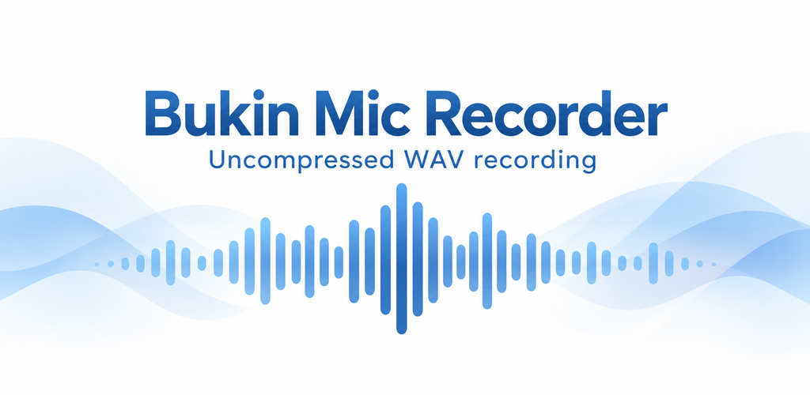
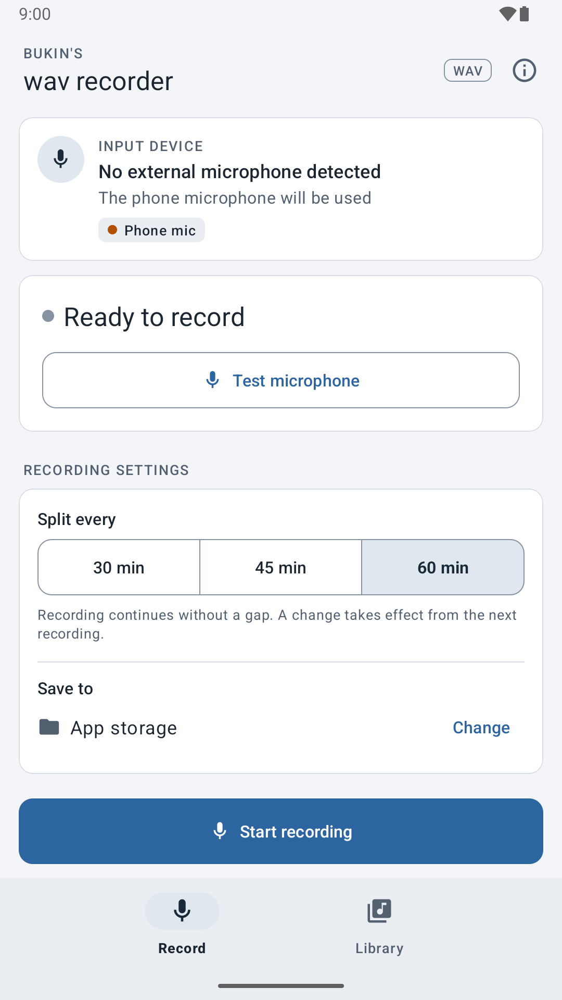
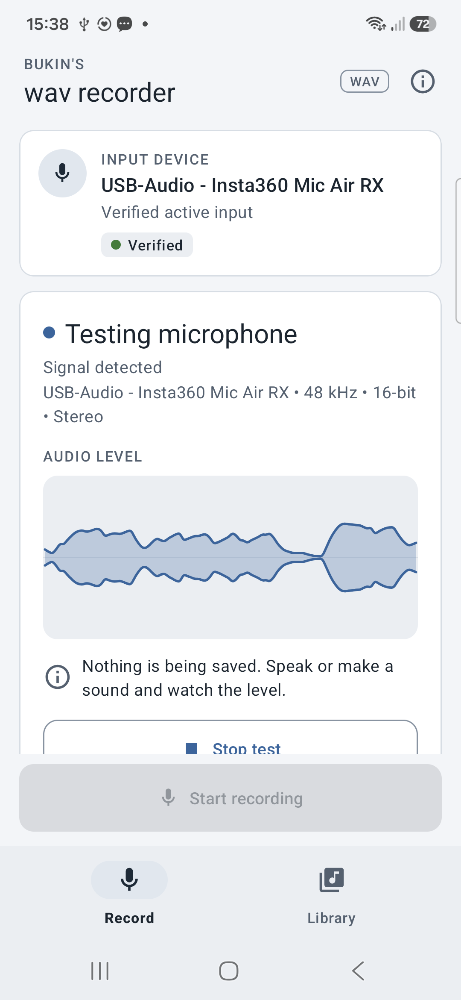
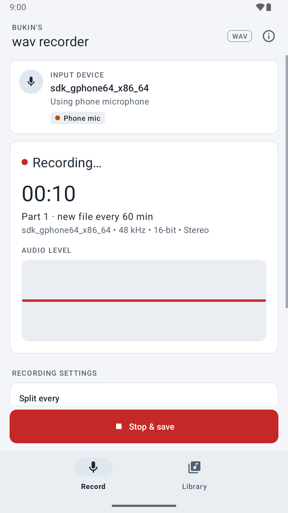
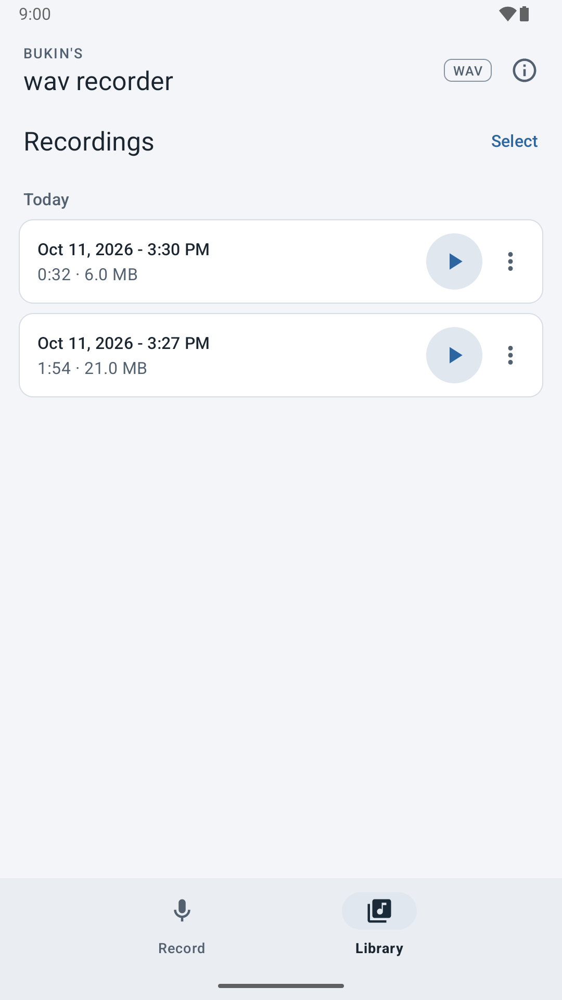
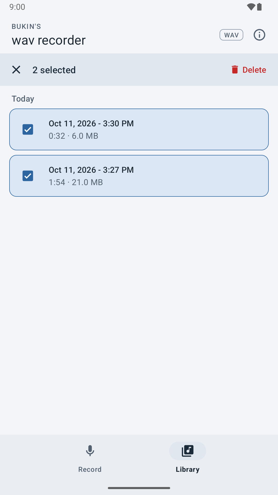

Bukin Mic Recorder — חומרי החנות
טיוטות לבדיקה שלך. שום דבר לא הועלה ל־Google Play.
תמונת הקידום

צילומים אמיתיים מסביבת בדיקה נקייה
צילום בדיקת המיקרופון הוא מה־A55 עם Insta360 וגל קול פעיל. יתר הצילומים מהאמולטור. צילום ה־A55 הוא מקור בגודל מלא: עדיין נדרשת התאמה למידות החנות ובדיקת פס ההתראות. צילום ההקלטה הפעילה עדיין דורש החלפה.

המסך הראשי והגדרות ההקלטה

Mic Test — צילום אמיתי מה־A55 עם Insta360

הקלטה — להחלפה בצילום ממכשיר אמיתי

ספרייה עם הקלטות דוגמה בלבד

בחירת שתי הקלטות ללא מחיקתן
פרטי ההכנה והבדיקות